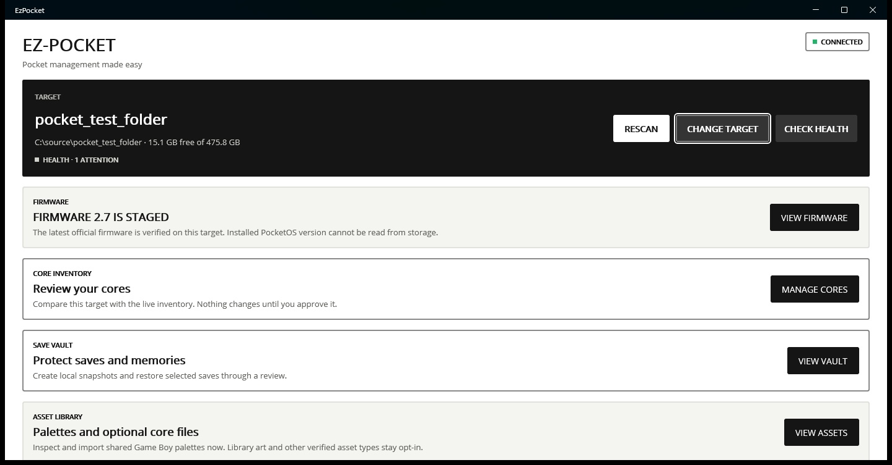
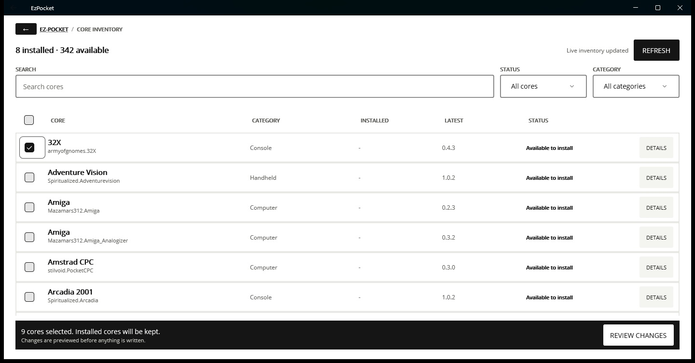
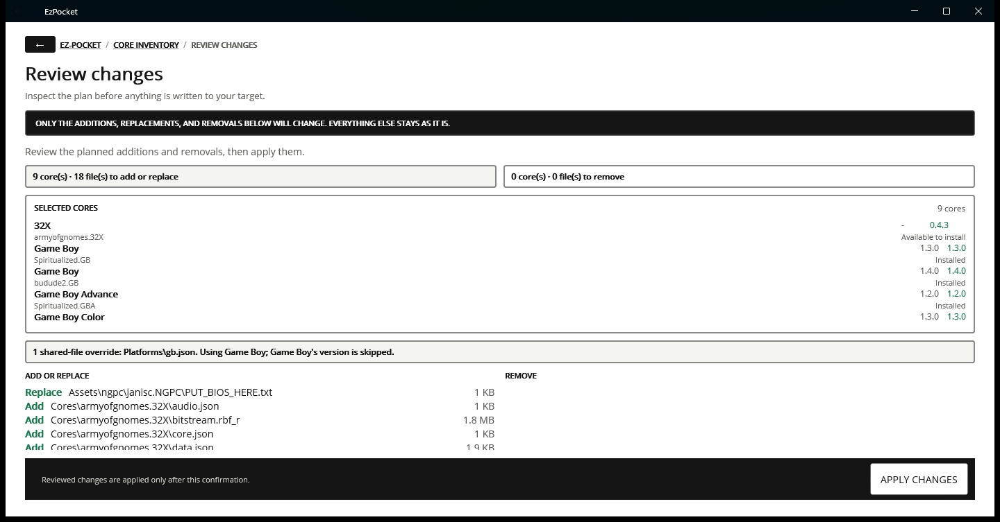
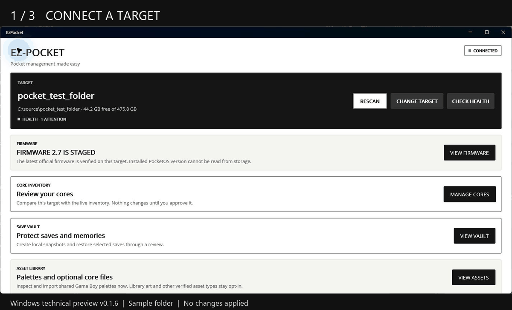

Your Pocket.Your say.
Keep your Analogue Pocket in order.
Manage cores, firmware, saves, and assets from one desktop app. See exactly what will change on your SD card before you approve a write.
Open source. Local save backups. No account required.
01 / YOUR TARGET, AT A GLANCE WINDOWS CAPTURE

Real app captures from the v0.1.6 preview, using a sample folder. The current preview may look different.
THE RULE IS SIMPLE Scan first. Review the plan. Write when you’re ready.
A CLOSER LOOK
Know what’s on your card. Selecting a target and browsing cores leaves your card unchanged. You stay in control of the next step.
01 Find your next core. Browse familiar system names, search the inventory, and compare installed versions. Start with your own selection or a curated core collection.
Friendly names up front.

CORE INVENTORY / V0.1.6 PREVIEW 02 Review every change. Inspect additions, replacements, and removals before you apply them. Package conflicts and blockers appear in the review, so you can make an informed choice.
Replaced and removed core content is backed up.

CHANGE REVIEW / V0.1.6 PREVIEW WATCH THE 30-SECOND WALKTHROUGH + 
No changes were applied to the sample target during these captures. Open the walkthrough separately ↗
THE MAINTENANCE BENCH
More of your Pocket, Each task has its own scope and review. Core changes and firmware staging stay separate.
01 / CORES A readable inventorySearch, compare, and select cores. Preview the file changes and start with curated collections.
02 / SAVE VAULT Keep your progress closeCreate local snapshots of saves and Memories. Review selected restores before writing them to your card.
03 / FIRMWARE A deliberate updateCheck the official PocketOS source, verify the published checksum, and explicitly stage firmware.
04 / HEALTH Understand your targetRead-only checks flag incomplete folders, unreadable core metadata, and low free space.
05 / ASSETS Make it yoursInspect and manage optional palettes and supported image assets through scoped review workflows.
06 / DIAGNOSTICS Useful when you need helpExport local diagnostics with target paths and exception messages omitted, then choose what to share. READY TO TRY IT?
A little less maintenance. Start with the Windows technical preview. Extract the ZIP, keep its files together, and launch EzPocket.exe . No separate .NET runtime is needed.
DOWNLOAD WINDOWS PREVIEW ↗ Opens GitHub Releases. Choose the Windows preview ZIP.
BEFORE YOU START This is early development software. The Windows preview is unsigned; Windows may show a security warning and organization policies may block it. Keep a separate backup of important card content.
WINDOWS Windows 10 1809 or later · x64 preview
MACOS Download not available yet
LINUX Experimental x64 preview · GTK 4.12+ REPORT A BUG OR SUGGEST AN IMPROVEMENT ↗